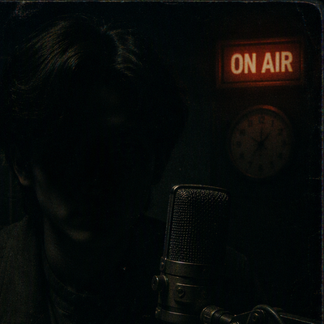

关闭×

广告


王建国 《清晨第一线》《午间新闻》《晚间新闻》
台里的"老黄牛"，从业三十年，嗓音浑厚，播报一丝不苟。听友编号：CX1987。

李晓梅 《上班路上》《下班快乐购》
活泼亲切，最擅长和打进热线的司机师傅唠家常。

张小舟 《音乐下午茶》
音乐编辑出身，收藏黑胶唱片两千余张，自称"只为好音乐熬夜"。

陈晓芸 《生活百事通》《夜空下的点歌台》
温柔耐心，每年收到听友来信最多的一位。

刘一鸣 《戏曲大观园》
票友出身，京剧、越剧、黄梅戏样样能来两段。

夜莺 （节目资料已归档）
前节目主持人，播音名"夜莺"，真实姓名不详。1999 年 3 月中旬起未到岗，节目组记录为"长期事假"。其工牌、更衣柜与最后一期节目母带仍封存于 14 层办公区。有听众来信称，凌晨时段偶尔能听到与其嗓音相似的播音——本台每日 00:30 后停止一切播音，此说法纯属误传。
本台长期招聘播音主持、导播、技术维护人员。有意者请将简历寄至台务办公室（地址见"关于我们"）。夜班岗位常年空缺，待遇从优。
李晓梅本周做客交通之声：收听回放
张小舟黑胶藏品展即将开幕：预约参观
陈晓芸读者见面会：报名参加
王建国后援会：申请加入 · 张小舟黑胶俱乐部：申请加入 · 陈晓芸听友会：申请加入
会员将不定期收到寄送的节目单明信片。